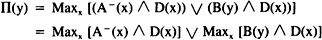

by Abraham Kandel
CRC Press, CRC Press LLC
ISBN: 084934297x Pub Date: 11/01/91
|
|
Fuzzy Expert Systems
by Abraham Kandel CRC Press, CRC Press LLC ISBN: 084934297x Pub Date: 11/01/91 |
| Previous | Table of Contents | Next |
Ronald R. Yager
Rule-based expert systems have shown themselves to be a powerful framework for building knowledge systems.1 The primary knowledge structure in these systems is the production rule which is typified by:2 If the tracing pattern is asymmetric gamma and the gamma quantity is normal then the concentration of gammaglobulin is within the normal range.
More formally, the structure of these rules is
If V1 is A1 and V2 is A2 . . . and Vn is An then U is B
The typical antecedent element in these rules consists of a variable V1 and an established, or fixed value, A1 which must be achieved in order for the rule to fire. We shall call the term V1 is A1 a fixed value antecedent condition.
It appears that in trying to model some expert knowledge we may be faced with situations in which we have an antecedent element that requires some relationship between two or more variables be satisfied. That is, rather than simply requiring a variable to attain some established or fixed value, the success of the rule depends upon the attainment of some relationship between variables in the system. Examples of these kinds of situations are
If the outer pressure is about the same as the inner pressure
then lower the heat
If V1 is 2 × V2 and V3 is A then U is B
In these examples the underlined portions exemplify the kinds of conditions which we have just mentioned. We shall call these types of conditions relational or variable antecedent elements.
Yager3 has shown the potential of the theory of approximate reasoning (AR) as a representational scheme for building expert systems. In particular he has indicated its power in dealing with partial matching as necessitated by imprecise values of the Ais as well as imprecision in knowledge about the Vi’s. He also indicated its ability to represent complex combining of antecedent conditions in particular cases in which we have to satisfy most of a collection of antecedent conditions. Gupta et al.4contains a number of applications of approximate reasoning to expert systems.
In this paper we extend the usefulness of the AR approach by investigating its ability to handle situations in which the antecedent requires the satisfaction of some relationship between variables.
In this section we briefly review some aspects of the theory of approximate reasoning.3
Assume V is a variable which takes as its value an element in the set X, called the base set of V. A canonical statement is of the form:
V is A
where A is a fuzzy subset of X. The intent of this statement is to indicate that the value of V is an element of the set A. More formally, this statement induces a possibility distribution Πv on X so that:
Πv(x) = A(x)
In this statement Πv(x) indicates the possibility that V has assumed the value x.
In the framework of the theory of approximate reasoning a production rule such as:
If V is A then U is B
where U has base set Y gets translated into a joint possibility distribution Πv,u on X × Y so that:
An alternative translation of these production rules is
A very lively literature exists discussing the relative merits of different interpretations.5
More generally, a rule:
If V1 is A1 and V2 is A2 . . . Vn is An then U is B
gets translated into a possibility distribution:
Πv1,v2,v3, . . . vn,u on X1 × X2 . . . × Xn × Y
so that:
Assume P1, . . . Pq is a collection of propositions which get translated into the possibility distributions Π1, . . . Πq, respectively. The combined effect of all these propositions is a possibility distribution Π on the space Z, which is the cross product of base sets of all the variables appearing in the propositions, so that:
Assume V is a variable which appears in some of the propositions, and we are interested in using Π(z) to obtain the knowledge this system affords us about V. The process used to obtain this information is projection. In particular, if Z = Z1 × Z2 × . . . Zn and Z1 is the base set of V, then our inferred value to V is
V is F
where for any z1 ∈ Z
Assume we have a knowledge base consisting of:
| P1: if V is A then U is B P2: V is D |
P1 translates into:

P2 translates into Π2(x) = D(x)
then:
In order to find the inferred value of U we get:

If D is normal, it has at least one element with membership one:
We shall denote:
thus,
| Previous | Table of Contents | Next |